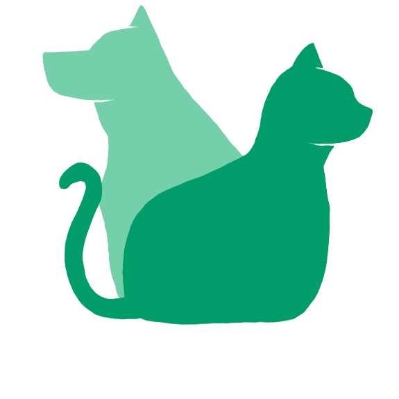

Inicio
(current)
Crianza
Adopciones
Veterinarios
Moderar
Crianzas pendientes
Adopciones pendientes
Mascotas pendientes
Estadísticas
Panel
Registrar usuario
Usuarios
{{ user.user_name }}
Mis Anuncios de Crianza
Mis Anuncios de Adopciones
Ofertas recibidas
Peticiones aceptadas
----------------
Mis Anuncios
Peticiones enviadas
{{ user.user_name }}
{{ requests.length }}
{{ breedings.length }}
{{ adoptions.length }}
{{ animals.length }}
Login
Logout